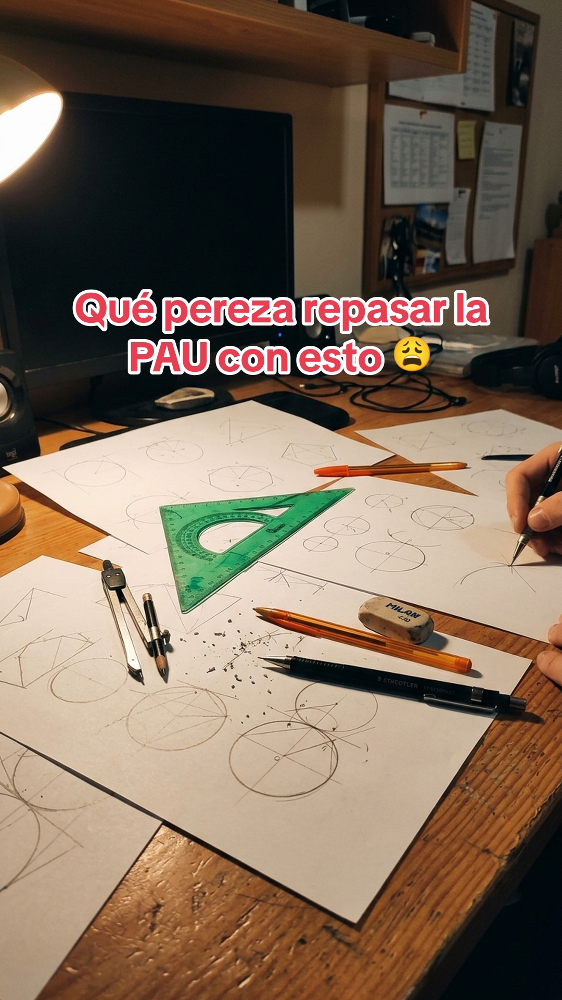
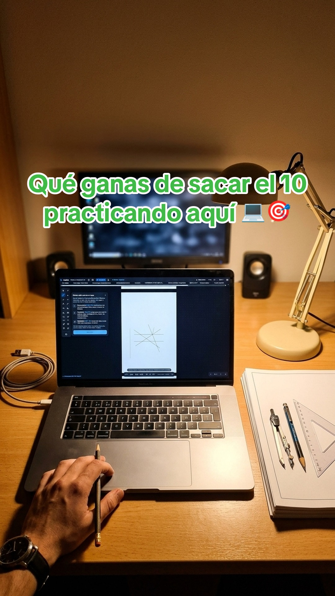
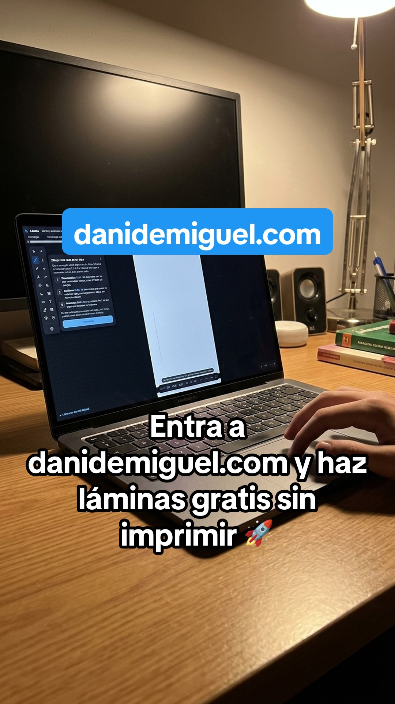

{'format': 'antes_despues', 'scene': 'escritorio_noche', 'hook': 'resultado'}



Olvídate de gastar hojas y perder tiempo con reglas para preparar la PAU. Practica gratis todos los ejercicios en danidemiguel.com 👇 #dibujotecnico #2bachillerato #PAU #selectividad #bachillerato